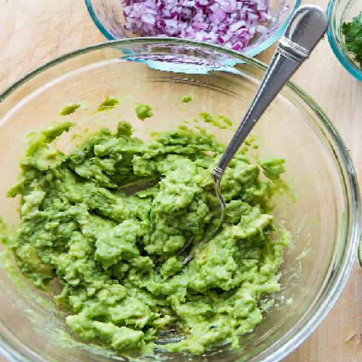

About
This is my guacamole recipe, I came up with it by looking at different recipes online trying those and then comparing mine to others people and taking some of there ideas. It's pretty basic but tastes good, is very healthy, and goes well with corn chips.
Directions
- First step is to find ripe avocados, make sure they're not to hard but not to soft, it takes a little time to be able to pick out the right avocado but it's the most important part of good guacamole.
- Cut your avocados in halves and scoop out the pit and then scoop out the meat of the avocado, if done right it should all come out at once.
- With a fork mash up the avocado it should be a little mushy but at the same time retain a little bit of chunkyness to it.
- Dice tomatoes if you're using them into very fine pieces, you should hardly notice them. I generally don't like tomatoes in my guacamole but that's because I don't like tomatoes.
- Add in all the ingredients and seasonings to your avocado- salt, pepper, garlic powder, lime juice, cilantro, and peppers(I use red pepper powder). I sometimes sprinkle in some adobo seasoning but finding the right amount of seasoning will be differnt for everyone so don't be afraid to experiment.
- After everything is in one bowl stir it all up and blend all your flavors.
- You can know either serve it and eat it or if you want to store it for later you'll have to seal it air-tight and put it in the fridge right away, avocado starts going bad as soon as you take the seed out so I would recommend just eating it as soon as you make it if possible.
Ingredients
Click here for ingredient breakdown
- 2 ripe avocados
- lime juice
- salt, doesn't have to be kosher
- serrano chiles - can be substitued by red pepper powder or green peppers.
- cilantro
- black pepper
- tomato, chopped very finely
- garlic powder
Nutrition Information
| Fat Per Serving |
Protein Per Serving |
Carbohydrates Per Serving |
Total Calories Per Serving |
| 100 |
10 |
20 |
200 |